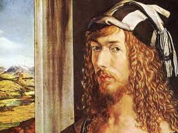
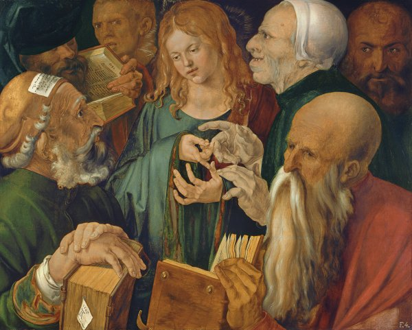

Alberto Durero es uno de los artistas más famosos del Renacimiento alemán. En su producción
abundan pinturas, dibujos, grabados y escritos teóricos sobre arte.
Nació el 21 de mayo de 1471 en Nüremberg, Alemania. Era hijo de Alberto Durero el Viejo y Barbara Holfer.
La pareja tuvo dieciocho hijos, pero solo tres lograron sobrevivir. Su padre, un orfebre húngaro, fue su
primer maestro, enseñándole el oficio de orfebre y joyero.
Tras trabajar con él durante un periodo de tiempo, el joven Durero se interesó más por la pintura. El padre
accedió a los deseos del hijo y en 1486 ingresó en el taller de Michael Wolgemut, el principal productor de
retablos, como aprendiz de pintor y diseñador de grabados.

Allí permaneció cuatro años, llegando a superar la calidad artística de su maestro. Después, realizó un viaje
de estudios para ampliar su formación y conocer a otros artistas. Fue a Colmar con la intención de entrar en
el taller del pintor y grabador alemán Martin Schongauer, pero el maestro había fallecido. Se dirigió a Basilea
y a Estrasburgo, donde realizó ilustraciones para varias publicaciones.
En estos años, su arte refleja una enorme calidad en el trazado del dibujo y una minuciosa observación del detalle.
Finalmente, regresó a Nüremberg en 1494, ya que sus padres habían concertado su enlace con Agnes Frey. El matrimonio
le aportó el dinero necesario para crear su propio estudio Nüremberg.
Ese mismo año marchó a Italia y visitó Venecia, conoció la obra de Bellini, Mantenga y Pollaiuolo. El
viaje duró dos años, pintó castillos, paisajes y panorámicas, apuntes que después empleará en sus obras.
El artista se había formado en un entorno influido por la escuela flamenca y la tradición gótica alemana.
Pero su viaje a Italia le permitió asimilar los postulados artísticos del Renacimiento italiano despertando
su interés por la geometría y las proporciones matemáticas.
De regreso a Nüremberg, Durero comenzó un serio estudio de las matemáticas y de las proporciones humanas.
El dominio de la xilografía y el grabado hicieron que su fama fuera asentándose y que elabora un gran número
de obras. Destaca la serie de grabados del Apocalipsis (1498), La Gran Pasión y la Vida de la Virgen. Aunque
la temática sigue siendo convencional, la técnica es novedosa. Las figuras están llenas de expresividad y son
tratadas con gran minuciosidad, mostrando multitud de detalles.
Entre 1505 y 1507 visitó Italia de nuevo, pasando mucho tiempo en Venecia. El objetivo ya no era completar su
aprendizaje, sino asentar su fama internacional. Y tras ser consagrado y reconocido como un artista de prestigio
volvió a Nüremberg. En su ciudad natal pintó algunas obras de grandes dimensiones como El martirio de los diez
mil, una obra de gran dinamismo en la que incorpora el colorismo veneciano. También pintó las tablas de Adán y Eva

En 1512 fue nombrado pintor de corte del emperador Maximiliano I y de Carlos I. Sus últimos años los dedicó
su obra teórica, Tratado sobre la proporción, publicado en cuatro libros en 1525.
Finalmente falleció en Nüremberg en 1528. Es una de las figuras más importantes del Renacimiento en Europa
septentrional, y a través de sus grabados ejerció una enorme influencia en otros artistas del siglo XVI
Obras más importantes de Albero Durero
Adoración del Niño (1496-97)
Durero realizó esta obra al de llegar de Italia y pone de manifiesto todo lo aprendido, presenta a una Virgen
monumental, casi escultórica. La construcción espacial de la sala también sigue las teorías de la perspectiva de los
italianos, aunque se observan algunos detalles alemanes, como el paisaje de Nüremberg que se ve a través de la ventana.
Melancolía
Es la representación de la virtud intelectual. Es una mujer sentada en un banco de piedra y está acompañada por
un ángel tristón y un perro a sus pies. Su aspecto es descuidado y su cabello está despeinado.
Está absorta, pero no en un trabajo, sino en un estado de inactividad completa, con la cabeza apoyada
en el puño. Está sumida en una intensa actividad intelectual. No continúa con su trabajo por pereza,
sino porque le parece que no tiene sentido. A su alrededor aparecen objetos desordenados.
En esta obra, Durero intelectualiza la Melancolía y la asocia al Arte. Su ejecución es meticulosa y
está sobrecargada de significados. Sintetiza las características del artista como genio, atormentado
por la creatividad, sometido a sus impulsos, huraño y solitario.